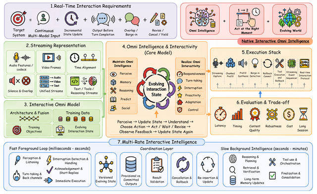
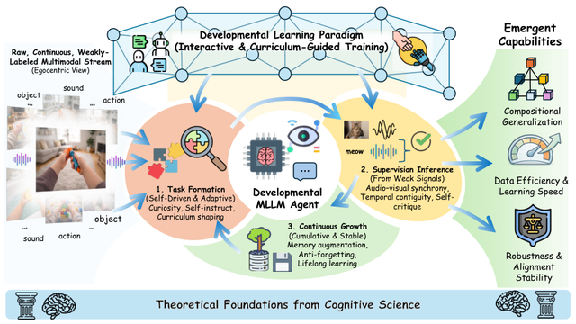
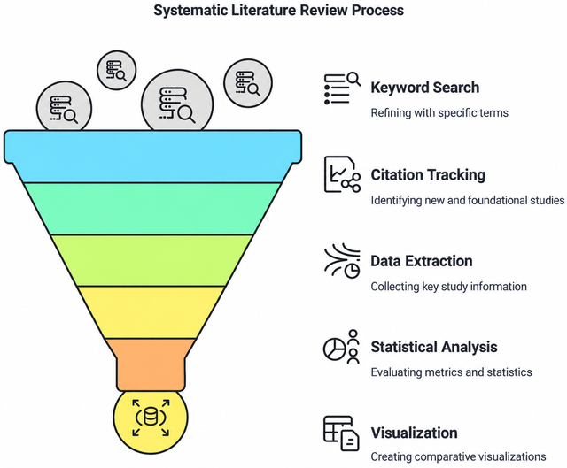
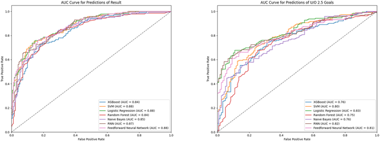
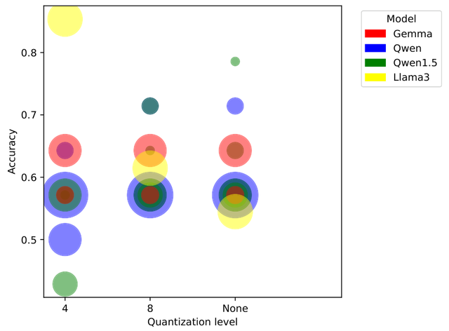

Zhuoqing Zhong.
I want to build AI that understands the world as we experience it and anticipates what comes next, so we can rely on it in everyday life.
About
I am a master's student in Electrical and Computer Engineering at Carnegie Mellon University.
My research interests include egocentric vision-language models, world models, and multimodal learning, with an emphasis on reliability in real-world settings.
Research interests
Selected Publications
PAPERS & PREPRINTS-

PREPRINT · 2026Native Real-Time Interactive Omni Intelligence: A Unified Framework.Preprints.org, 2026. Preprint.PDF DOI GitHub -

CVPR WORKSHOPS · 2026Position: Multimodal LLMs Should Learn from Children.CVPR Workshops (CV4CHL), 2026, pp. 5619–5630.PDF Workshop -

JOURNAL ARTICLE · 2026Improving Negative Rejection Ability in Language Models: A Review of Fine-Tuned LLMs, RAG, and RAFT.Journal of King Saud University Computer and Information Sciences, 2026.PDF DOI -

JOURNAL ARTICLE · 2024Data-driven prediction of soccer outcomes using enhanced machine and deep learning techniques.Journal of Big Data, 2024.PDF DOI -

JOURNAL ARTICLE · 2027Evaluating Mild Cognitive Impairment using large language models: A comparative analysis.Biomedical Signal Processing and Control, 130, 111602, 2027.DOI


* Equal contribution. † Core contributor.